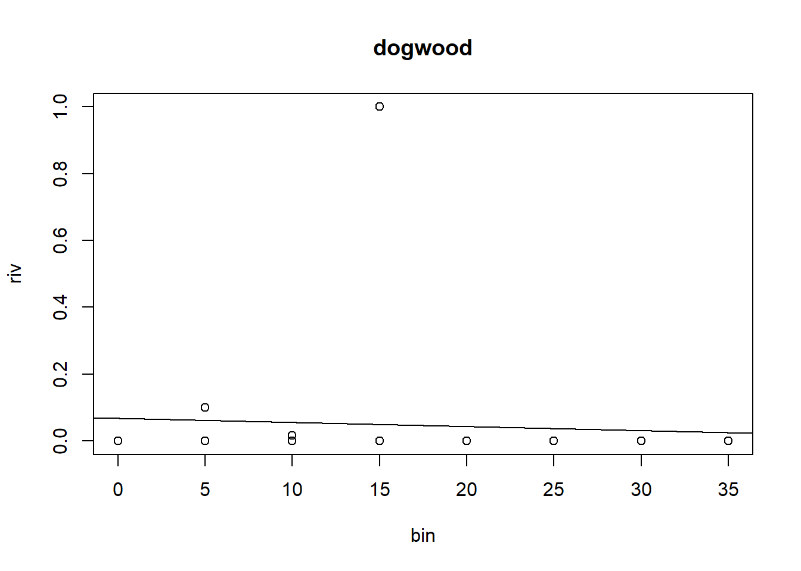

Some approaches analyze lab 3
As we covered in our in-class lab analysis, there is no one correct way to analyze a complex dataset like the one that we have in our lab 3. However, I’ll share my approaches here.
Some Context
Let’s return to the lab’s hypotheses:
(H1): Along a strong, but short, moisture gradient the dominant tree species will vary in distinct regions. (H2.A): Trees alter the soil composition at a hyper-local scale, so that their leaf-litter supports distinct communities of invertebrates. (H2.B): Alternative to H2.A, it could simply be that the abiotic factors are the primary factor determining soil community structure, and the community will vary based on the soil characteristics rather than treespecies.
So for the first hypothesis, we want to evaluate if the dominance of different trees varies along the hillside. To assess “dominance” of trees, we can use the relative importance index and compare how it changes for different trees along the slope.
The second hypothesis is a little more complicated. We are simply interested if there is some difference in community composition between (A) particular trees vs open areas vs others or (B) between soil characteristics (which we assume are associated with the region). Thus, our first hypothesis is someone dependent on the results of the first hypothesis. If the tree community composition varies along the hill side then we’ll only be able to compare . However, if tree dominance doesn’t vary with the slope, we can assess soil community based on the tree-base and the soil community separately.
One general concern I had for this data analysis was that the wasn’t really a true “open” area from which we could collect. The tree canopy covers the entire slopeside so we can’t just compare tree vs. non-tree. However, if trees are different based on regions of the slope, we can still assess if the community composition is different. Another challenge of this lab is we have relatively small samples sizes for the transects. However we do have good data for the inverts.
My approach to analyze the data is very exploratory, I try a bunch of possible approaches to see if we can tease out a signal. However, as you’ll see, analyses are just a tool - while some may be more useful in a given case, generally if there truly isn’t a pattern - your data will show it!
For all this, I’m am using a few more advanced approaches to make it quicker. I’ll show clearly how to run a simple version, but there’s also the advanced options for those of you interested in some of the more powerful applications of R.
In a simple approach, we read in our data by downloading from the github repo’s data folder, put it in our folder of choice, then read it in locally (this is what I’ve taught so far):
inverts <- read.csv('inverts.csv')
tree_raw <- read.csv('tree_raw.csv')What I actually do when writing the tutorials is I will read in the files directly from the internet. You can give read.csv an html address with a csv file. These can be found by clicking “raw” on the github page when looking at the csv of the data. That normally would look like this:
inverts <- read.csv("https://raw.githubusercontent.com/USC-Ecology-Lab/Lab_3_Community-Assemblages/main/data/inverts.csv")However, because we have multiple files, I could click through and manually copy all links, but that’s less fun. So I decided to try and figure out how to get all links automatically using githubs API. Now, this took longer to learn how to do than it would’ve to just copy-and-paste. But I had fun learning this for the past 10mins. Admittedly this is way more than just the ‘advanced version’, but you clicked on this tab so ha.
Thanks chatGPT for the framework!
# This is the code that actually got ran
# I need R's api and json libraries
library(httr)
library(jsonlite)
repo <- 'usc-ecology-lab/Lab_3_Community-Assemblages'
folder_path <- './data'
api_url <- paste0("https://api.github.com/repos/", repo, "/contents/", folder_path)
# read it all in
response <- GET(api_url) |>
content('text') |>
fromJSON()
file_names <- response$name |>
gsub(pattern = '.csv',
replacement = "",
)
# now I can create a list of dataframe
df_list <- list()
# loop through and download
for(i in 1:nrow(response)) {
df_list[[i]] <- read.csv(response$download_url[i])
}
names(df_list) <- file_names #name the list
list2env(df_list, envir = .GlobalEnv) #load the list to the environment<environment: R_GlobalEnv>rm(list = c("df_list", "repo", "folder", "api_url",
'file_names','folder_path','i'))Exploratory Data Analysis for Trees
To address the first hypothesis, we need to explore how the importance of trees varies with the slope. However, to do this we need to think about the data we have.
The tree_raw dataframe does not offer much to work with. Unless we wanted to investigate a question like “does loblolly size vary based on slope?”. Instead we need to rely on the RIV (relative importance value). I already calculated this for you in a few approaches. First, I did it by species and by category (grouping some similar species together). I also calculated RIV in 5m bins and then again in 3-large bins which correspond to the defined sub regions people listed on their transects.
RIV is calculated by effectively measuring the total area in a set bin which is occupied by that particular species. Such that for each \(s\) species, and \(i\) tree (belonging to a \(s\) species):
\[ RIV_{s} = \frac{\sum_{i_s} \pi \frac{DBH_{i_s}}{2}^2}{\sum_{i} \pi \frac{DBH_{i}}{2}^2} \]
An attempt at regression
I really wanted to try a correlation/regression analysis in this lab. However, the data don’t really make it all that clean (or appropriate). Nonetheless, I figured if I make 5-m bins we can try to treat them as a continuous variable and run a regression. The problem is that the tree observations are so sparse that there just isn’t enough data.
We can only look at one tree’s RIV change at a time. For the simple example, let’s just do hardwoods because they are the most abundant overall
library(dplyr)
hardwood_bins <- tree_cat_5m |>
filter(Tree_cat == 'hardwood')
hardwood_lm <- lm(riv ~ bin, data = tree_cat_5m)
summary(hardwood_lm)
Call:
lm(formula = riv ~ bin, data = tree_cat_5m)
Residuals:
Min 1Q Median 3Q Max
-0.6934 -0.2554 0.1867 0.2551 0.3483
Coefficients:
Estimate Std. Error t value Pr(>|t|)
(Intercept) 0.651744 0.129688 5.025 6.48e-05 ***
bin 0.005830 0.007936 0.735 0.471
---
Signif. codes: 0 '***' 0.001 '**' 0.01 '*' 0.05 '.' 0.1 ' ' 1
Residual standard error: 0.3708 on 20 degrees of freedom
Multiple R-squared: 0.02628, Adjusted R-squared: -0.02241
F-statistic: 0.5397 on 1 and 20 DF, p-value: 0.4711From the above output, we can look at the p-value of “bin” to see if there is a signficant effect of bin (slope location) on riv. It is 0.471, so we would conclude the slope is not significantly different from 0. Or in simpler words there is no effect.
To be quick, I just looked at this data using base R:
plot(riv ~ bin, hardwood_bins)
abline(hardwood_lm)This isn’t a pretty plot I would present, but it is useful for my purposes.
To do this with other categories, you can just change where we filter for hardwoods and try for other categories!
Really, in fully data exploration mode, I want to run the simple analysis for every single species and every single categories. It gets fairly messy to do this “by-hand” and copy-pasting code over and over and changing little details. Instead what I really would do here is loop through all categories and print out the regression output and make quick, ugly plots. If there’s something interesting, I can clean it up later.
I can now scroll through all this output and read what I want!
# Loop analysis:
tree_sp <- list()
for(tree in unique(tree_sp_riv_5m$tree_id)) {
tree_sp[[tree]] <- tree_sp_riv_5m |>
filter(tree_id == tree)
}
# run the regressions here
tree_5m_reg_mod <- list()
for(tree in names(tree_sp)) {
tree_5m_reg_mod[[tree]] <- lm(riv ~ bin, data = tree_sp[[tree]])
print(tree) # print out name of trees
print(summary(tree_5m_reg_mod[[tree]]))
}[1] "sycamore"
Call:
lm(formula = riv ~ bin, data = tree_sp[[tree]])
Residuals:
1 2
0.1658 -0.1658
Coefficients: (1 not defined because of singularities)
Estimate Std. Error t value Pr(>|t|)
(Intercept) 0.8342 0.1658 5.031 0.125
bin NA NA NA NA
Residual standard error: 0.2345 on 1 degrees of freedom
[1] "dogwood"
Call:
lm(formula = riv ~ bin, data = tree_sp[[tree]])
Residuals:
1 2 3
0.1778 -0.3556 0.1778
Coefficients:
Estimate Std. Error t value Pr(>|t|)
(Intercept) -0.52779 0.66524 -0.793 0.573
bin 0.09000 0.06159 1.461 0.382
Residual standard error: 0.4355 on 1 degrees of freedom
Multiple R-squared: 0.6811, Adjusted R-squared: 0.3621
F-statistic: 2.135 on 1 and 1 DF, p-value: 0.3821
[1] "hickory"
Call:
lm(formula = riv ~ bin, data = tree_sp[[tree]])
Residuals:
1 2 3 4 5
0.2163 -0.5976 0.2350 -0.1588 0.3050
Coefficients:
Estimate Std. Error t value Pr(>|t|)
(Intercept) 0.6799888 0.4188987 1.623 0.203
bin 0.0007486 0.0336468 0.022 0.984
Residual standard error: 0.4387 on 3 degrees of freedom
Multiple R-squared: 0.000165, Adjusted R-squared: -0.3331
F-statistic: 0.000495 on 1 and 3 DF, p-value: 0.9836
[1] "loblolly"
Call:
lm(formula = riv ~ bin, data = tree_sp[[tree]])
Residuals:
1 2 3
1.388e-17 7.426e-02 -7.426e-02
Coefficients:
Estimate Std. Error t value Pr(>|t|)
(Intercept) 1.021809 0.181902 5.617 0.112
bin -0.003843 0.008575 -0.448 0.732
Residual standard error: 0.105 on 1 degrees of freedom
Multiple R-squared: 0.1672, Adjusted R-squared: -0.6655
F-statistic: 0.2008 on 1 and 1 DF, p-value: 0.7318
[1] "whiteoak"
Call:
lm(formula = riv ~ bin, data = tree_sp[[tree]])
Residuals:
ALL 2 residuals are 0: no residual degrees of freedom!
Coefficients:
Estimate Std. Error t value Pr(>|t|)
(Intercept) 1.00e+00 NaN NaN NaN
bin -6.28e-17 NaN NaN NaN
Residual standard error: NaN on 0 degrees of freedom
Multiple R-squared: NaN, Adjusted R-squared: NaN
F-statistic: NaN on 1 and 0 DF, p-value: NA
[1] "poplar"
Call:
lm(formula = riv ~ bin, data = tree_sp[[tree]])
Residuals:
ALL 1 residuals are 0: no residual degrees of freedom!
Coefficients: (1 not defined because of singularities)
Estimate Std. Error t value Pr(>|t|)
(Intercept) 1 NaN NaN NaN
bin NA NA NA NA
Residual standard error: NaN on 0 degrees of freedom
[1] "bay"
Call:
lm(formula = riv ~ bin, data = tree_sp[[tree]])
Residuals:
1 2
0.4594 -0.4594
Coefficients: (1 not defined because of singularities)
Estimate Std. Error t value Pr(>|t|)
(Intercept) 0.5406 0.4594 1.177 0.448
bin NA NA NA NA
Residual standard error: 0.6497 on 1 degrees of freedom
[1] "wateroak"
Call:
lm(formula = riv ~ bin, data = tree_sp[[tree]])
Residuals:
1 2 3 4 5
0.38173 -0.12478 -0.09681 -0.48781 0.32768
Coefficients:
Estimate Std. Error t value Pr(>|t|)
(Intercept) 0.456404 0.334137 1.366 0.265
bin 0.007197 0.017371 0.414 0.706
Residual standard error: 0.4147 on 3 degrees of freedom
Multiple R-squared: 0.05413, Adjusted R-squared: -0.2612
F-statistic: 0.1717 on 1 and 3 DF, p-value: 0.7065for(tree in names(tree_sp)) {
try({
plot(riv ~ bin, tree_sp[[tree]],
main = tree)
abline(tree_5m_reg_mod[[tree]])
})
}
Error in int_abline(a = a, b = b, h = h, v = v, untf = untf, ...) :
'a' and 'b' must be finiteError in int_abline(a = a, b = b, h = h, v = v, untf = untf, ...) :
'a' and 'b' must be finiteError in int_abline(a = a, b = b, h = h, v = v, untf = untf, ...) :
'a' and 'b' must be finiteI can also do this by category:
# Loop analysis:
tree_cat <- list()
for(cat in unique(tree_cat_5m$Tree_cat)) {
tree_cat[[cat]] <- tree_cat_5m |>
filter(Tree_cat == cat)
}
tree_cat_reg_mod <- list()
for(cat in names(tree_cat)) {
tree_cat_reg_mod[[cat]] <- lm(riv ~ bin, data = tree_cat[[cat]])
print(cat)
print(summary(tree_cat_reg_mod[[cat]]))
}[1] "hardwood"
Call:
lm(formula = riv ~ bin, data = tree_cat[[cat]])
Residuals:
Min 1Q Median 3Q Max
-0.6879 -0.1268 0.1870 0.2389 0.3860
Coefficients:
Estimate Std. Error t value Pr(>|t|)
(Intercept) 0.79501 0.19889 3.997 0.00397 **
bin -0.00905 0.01896 -0.477 0.64595
---
Signif. codes: 0 '***' 0.001 '**' 0.01 '*' 0.05 '.' 0.1 ' ' 1
Residual standard error: 0.4067 on 8 degrees of freedom
Multiple R-squared: 0.02768, Adjusted R-squared: -0.09386
F-statistic: 0.2278 on 1 and 8 DF, p-value: 0.646
[1] "pine"
Call:
lm(formula = riv ~ bin, data = tree_cat[[cat]])
Residuals:
1 2 3
1.388e-17 7.426e-02 -7.426e-02
Coefficients:
Estimate Std. Error t value Pr(>|t|)
(Intercept) 1.021809 0.181902 5.617 0.112
bin -0.003843 0.008575 -0.448 0.732
Residual standard error: 0.105 on 1 degrees of freedom
Multiple R-squared: 0.1672, Adjusted R-squared: -0.6655
F-statistic: 0.2008 on 1 and 1 DF, p-value: 0.7318
[1] "oak"
Call:
lm(formula = riv ~ bin, data = tree_cat[[cat]])
Residuals:
1 2 3 4 5 6 7
0.15129 0.35024 0.22350 -0.08382 -0.16453 -0.62798 0.15129
Coefficients:
Estimate Std. Error t value Pr(>|t|)
(Intercept) 0.41544 0.28435 1.461 0.204
bin 0.01444 0.01295 1.115 0.315
Residual standard error: 0.3597 on 5 degrees of freedom
Multiple R-squared: 0.1992, Adjusted R-squared: 0.03904
F-statistic: 1.244 on 1 and 5 DF, p-value: 0.3155
[1] "other"
Call:
lm(formula = riv ~ bin, data = tree_cat[[cat]])
Residuals:
1 2
0.4594 -0.4594
Coefficients: (1 not defined because of singularities)
Estimate Std. Error t value Pr(>|t|)
(Intercept) 0.5406 0.4594 1.177 0.448
bin NA NA NA NA
Residual standard error: 0.6497 on 1 degrees of freedomfor(cat in names(tree_cat)) {
try({
plot(riv ~ bin, tree_cat[[cat]],
main = cat)
abline(tree_cat_reg_mod[[cat]])
})
}


Error in int_abline(a = a, b = b, h = h, v = v, untf = untf, ...) :
'a' and 'b' must be finiteAgain in all these cases we just don’t have enough data or any semblance of a trend to make a conclusion.